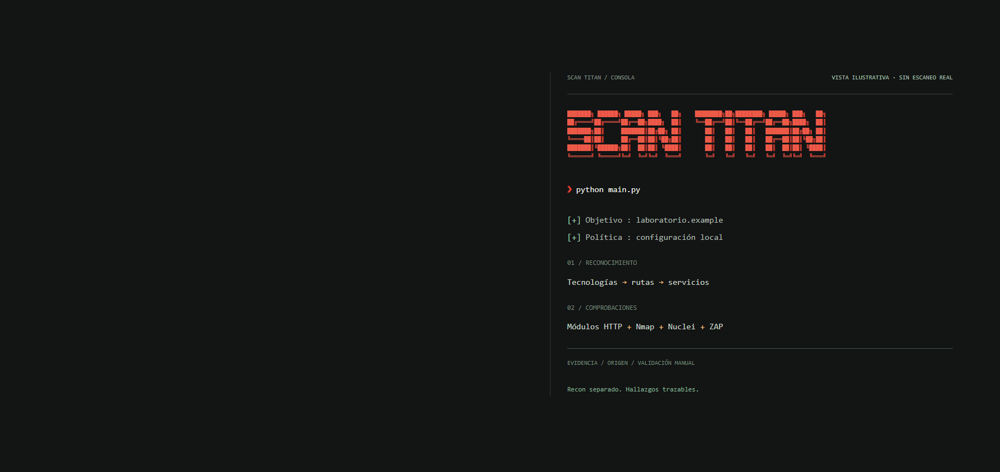

Definir
Objetivos y política de ejecución desde archivos locales. Perfiles y límites explícitos.
targets + config

RECONOCER. VALIDAR. DOCUMENTAR.
De la superficie
a la evidencia.
Una sola ejecución. Reconocimiento, pruebas web y herramientas especializadas conectadas en un flujo de auditoría trazable para una comunidad global de profesionales y equipos de seguridad.
01 / ARQUITECTURA
Scan Titan organiza cada etapa de la auditoría. Los datos de superficie alimentan las pruebas; los hallazgos conservan su origen, evidencia y contexto.
Objetivos y política de ejecución desde archivos locales. Perfiles y límites explícitos.
targets + config
Tecnologías, puertos, rutas y APIs. El reconocimiento construye el inventario del objetivo.
superficie + contexto
Módulos web y motores externos. Pruebas acotadas y contraste de respuestas para reducir ruido.
DAST + integraciones
Deduplicación, evidencia y comandos de validación. Informes separados del reconocimiento.
hallazgos + reportes
La actividad debe ser verificable. Peticiones completadas, activas y en espera; tiempos de respuesta y estado de las herramientas. Encolar una prueba no equivale a terminarla.
02 / MOTORES
El motor Python y las integraciones tienen responsabilidades distintas. Su disponibilidad y el perfil seleccionado determinan qué pruebas se ejecutan.
asyncio y aiohttp coordinan los
módulos HTTP. Grupos de trabajo acotados, esperas entre
peticiones y límites por solicitud permiten avanzar sin crear
miles de conexiones simultáneas.
Nmap identifica puertos y servicios. Sus perfiles NSE aportan comprobaciones específicas; la salida XML se transforma en reconocimiento y hallazgos con el nombre del script que los originó.
Nuclei ejecuta las plantillas disponibles con perfiles de cobertura y límites de carga. Titan incorpora los resultados JSON y mantiene el identificador de la plantilla para su revisión.
La API local de OWASP ZAP recibe rutas válidas, coordina la exploración y recupera alertas. El modo de la política selecciona el análisis pasivo o las pruebas activas.
WhatWeb y wafw00f complementan la identificación de tecnologías y WAF. ffuf y subfinder amplían el reconocimiento cuando están disponibles. Playwright aporta exploración SPA y evidencia visual opcional.
03 / RESULTADOS
El reconocimiento no es una vulnerabilidad. Los inventarios, los hallazgos y el estado de las herramientas se presentan por separado.
GETproductos200
GETperfil401
GETlogin200
GETapp.js200
Un código 200 no basta: las redirecciones al inicio de sesión y las páginas de error personalizadas deben contrastarse.
https://laboratorio.example/
curl -sS -D - -o /dev/null
https://laboratorio.example/
Origen de la detección, petición, respuesta relevante y validación manual. La confianza y el riesgo de falso positivo acompañan al resultado.
La deduplicación conserva la primera y la última detección. Las capturas del navegador se añaden cuando la prueba y el entorno lo permiten.
Este ejemplo explica una observación de cabeceras. No demuestra un ataque ni representa un escaneo real.
| Archivo | Contenido | Uso |
|---|---|---|
| Daily_vulns_report.html | Hallazgos, estados y filtros | Revisión diaria |
| Formal_Audit_Report_Latest.html | Portada, alcance y detalle | Presentación del informe |
| Recon_Matrix.xlsx | Inventario y rutas por objetivo | Análisis y filtrado |
| Recon_Sitemap.html | Árbol navegable de endpoints | Exploración de superficie |
| External_Tools_Observability.html | Comandos, tiempos y salidas | Diagnóstico de motores |
| TXT / JSON / PNG | Hallazgos y artefactos de evidencia | Trazabilidad |
04 / OPERACIÓN
Python 3.11 o posterior. Configura el alcance y comprueba las dependencias antes del primer escaneo.
Código disponible en GitHub. Descarga el proyecto, revisa la configuración y prepara tus objetivos. Los reportes y las credenciales de cada auditoría deben permanecer fuera de Git.
Obtener Scan Titan# Descargar el proyecto
git clone https://github.com/RogerF5-Security/Scan-Titan.git
cd Scan-Titan
# Preparar el entorno
python -m venv .venv
.\.venv\Scripts\Activate.ps1
powershell -ExecutionPolicy Bypass -File .\install\install.ps1
# Tras definir los objetivos y la política
python main.py --health-check
python main.py# Descargar el proyecto
git clone https://github.com/RogerF5-Security/Scan-Titan.git
cd Scan-Titan
# Preparar el entorno
python3 -m venv .venv
source .venv/bin/activate
bash install/install.sh
# Tras definir los objetivos y la política
python main.py --health-check
python main.pytargets/targets.txtPolíticaconfig/config.yaml
El instalador puede solicitar permisos del sistema. El escaneo configurado se ejecuta sin confirmaciones interactivas.
python main.py --full
Amplía el perfil y los diccionarios. Revisa alcance, efectos y duración antes de ejecutarlo.
python main.py --monitor
Consulta el estado local de la ejecución. Los datos sin actualizar no equivalen a progreso vivo.
Finaliza de forma ordenada para generar reportes parciales. Ctrl+C interrumpe.
CRITERIO TÉCNICO
No. La cobertura depende del alcance, el acceso disponible, las tecnologías y las pruebas habilitadas. Los hallazgos requieren revisión de evidencia; el escáner complementa el criterio del auditor.
Objetivos definidos, configuración revisada y dependencias disponibles. Los perfiles de autenticación, el navegador y las herramientas externas requieren su propia preparación. Zero-touch describe la ejecución del escaneo, no la ausencia de configuración.
La orquestación registra actividad, duración, errores y códigos de salida. Los límites de las peticiones se mantienen aunque un proceso externo permita duración global ilimitada. Un latido de proceso no demuestra que todas sus pruebas estén avanzando.
No. Las vistas son ejemplos ficticios con dominios reservados. Los reportes, las credenciales y los objetivos internos no forman parte de esta publicación.